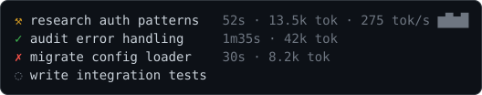

A status bar for Claude Code
Your quota burn, context fill, git state, and live activity, visible under every response.
Pure bash, no jq, no compiled binaries. Works on macOS, Linux, and Windows.

Claude Code warns you too late
The built-in status line is reactive. You learn the context window is full when it auto-compacts mid-task, and you learn you are near a rate limit once you are already throttled.
You find out the window is full once it compacts mid-task, and that you are rate limited once you are throttled. No pacing, no cost trend, no view of what Claude is doing.
The climbing context bar, the auto-compact marker, the pacing markers, and the pre-compact triangle give you runway.
Every character earns its place
This is the real two-line bar, nothing mocked up. Every segment is there for a reason.
What it shows
A skimmable map of what lands under every response.
📊 Quota
5-hour and weekly usage with pacing markers showing where you should be for even consumption.
🧠 Context
A colour-coded bar that warns before auto-compact, not after, with a marker at the compact point.
⚡ Live activity
A second line of running tools, subagents, and todo progress, updated as Claude works.
💵 Cost
Session cost and an optional burn rate, colour-coded.
🎯 Pacing markers
Each quota bar gains a marker for where you should be, so 37% reads as on track or running hot at a glance.
▲ Auto-compact aware
Marks the exact token point Claude Code will compact at and warns 20k tokens early.
⚒ Subagent panel
A status icon, elapsed, token cost, and a live tok/s rate per Task subagent.
🌱 Git state
Branch, lines changed, dirty count, ahead and behind, stash, and a clickable PR segment coloured by review state.
Deep dive · Live activity
A live feed of what Claude is doing
An optional second line, parsed incrementally from the transcript by a Node.js helper. It never blocks the bar, and without Node.js it simply turns off.
- Running now sits behind an animated spinner ⠻ in the warning colour; past 5 seconds its elapsed time appears, heat-coloured green, then yellow, then red, so a stuck command turns red on its own.
- The last finished tool shows with an arrow and flashes green with a check for a few seconds; a failure stays visible with a red cross for five minutes.
- Tool counts for the session, running and finished subagents with elapsed time, and a gradient todo bar with the current step.
- Stale reads as stale: when the cache ages past 45 seconds the whole line fades to dim.
Deep dive · Subagent panel
A subagent panel with a live burn rate
It restyles Claude Code's Task-subagent rows to match your theme and adds live numbers, including a tok/s rate and a sparkline computed from the per-tick token samples.

- Each row gets a status icon ( running, done, failed, queued), elapsed time, token cost, and a live tok/s rate with a sparkline, so a runaway agent is visible before it finishes.
- Rows are padded into an aligned column and trimmed to the panel width, dropping the sparkline first, then the rate, so they never wrap.
- On any error it prints nothing and Claude Code falls back to its default rows, so it can never break your panel. Set
subagent_rows=falseto keep the defaults. - Scope: Claude Code 2.1.170 delegates only Task-tool subagent rows; workflow and background-task rows keep its built-in style.
The two mechanics that let you act in time
Pacing markers turn a percentage into a decision, and the context warning mirrors Claude Code's real auto-compact maths.
Pacing markers
Each usage bar carries a marker for where your consumption should be for even use across the window. Bar behind the marker means you have headroom; past it means you are ahead of pace and may hit the limit early.
Compaction-aware context
The bar marks the exact token point where Claude Code auto-compacts and fires a triangle within 20k tokens of it, on any window size. It honours your autoCompactWindow and DISABLE_AUTO_COMPACT settings. Limits are read stdin-native at zero network cost on Claude Code 2.1+, with an OAuth fallback for older versions.
Eight truecolour themes
Match the bar to your terminal. Each preview is a real render of the bar, the same output --demo prints.
colour_theme=default
The six named themes store exact hex palettes and render in 24-bit truecolour, falling back to nearest 256-colour. default tracks your terminal's own palette; matrix is a monochrome phosphor-green tribute; mono and NO_COLOR drop all colour. Preview every theme live in your terminal with --demo, no config changes.
Build exactly the bar you want
Pick a theme, drag segments onto up to three lines, and watch a live, true-to-terminal preview. Then copy the config, copy a one-paste install command, or download your statusline.conf.
The apply command writes ~/.claude/statusline.conf in one paste. The preview fills every placed segment with sample data so you can see it; in a real session, empty segments (vim, agent, an absent PR) hide on their own, and line 2 (activity) is driven live by a Node helper.
Resolved settings
Import an existing statusline.conf
Paste your current ~/.claude/statusline.conf to load it into the configurator, edit, then re-export.
A richer layer on top of the built-in line
A strict superset of Claude Code's status line, not a competitor. Built on its own statusLine and subagentStatusLine hooks, and it degrades gracefully.
Pure bash. Nothing to compile, nothing to hide.
Points that matter for a tool that runs on every response and can read your OAuth token.
Pure bash, no jq, no binaries
Core runs on bash 3.2+, so it works on stock macOS. JSON is parsed with bash regex; there is nothing compiled to audit.
Never blocks the bar
Every network call, the version check, the OAuth usage fallback, and transcript parsing, runs in a background subshell. The bar only reads caches, even offline.
124 tests on 3 platforms in CI
124 automated BATS tests across 13 files run on Linux, macOS, and Windows on every change, plus ShellCheck linting. MIT licensed.
Security-hardened
Cache and temp files use umask 077, the OAuth token is passed to curl on stdin so it never appears in the process list, and all branch names, paths, and transcript text are stripped of control characters before printing.
What you need
Only bash and curl, both already required by Claude Code on every OS.
Required
- bash and curl (already required by Claude Code)
- Claude Code 2.1+ for stdin-native rate limits
Optional
- git for the git segments
- Node.js for the live activity line and subagent panel
One honest caveat: on Windows the script takes around 285ms, so keep refreshInterval at 2 or higher there. A value below the script's own runtime can blank the bar.
Install
The status bar appears after the next Claude Code response, not immediately.
macOS / Linux (or Git Bash on Windows)
curl -fsSL https://raw.githubusercontent.com/briansmith80/claude-code-status-bar/main/install.sh | bash
Windows (PowerShell)
irm https://raw.githubusercontent.com/briansmith80/claude-code-status-bar/main/install.ps1 | iex
Claude Code plugin system
/plugin marketplace add briansmith80/claude-code-status-bar /plugin install claude-code-status-bar /claude-code-status-bar:setup
Re-running either installer is always safe, and it is also how you update. After installing, preview a theme with bash ~/.claude/statusline-command.sh --demo.
Updates take one command, or none
A background check every 6 hours, a clickable update notice, and an atomic self-update that never touches your config.
When a new version is available you see an up-arrow notice in the bar, a clickable link straight to that release's notes.
bash ~/.claude/statusline-command.sh --update
It swaps files in only once every download succeeds, and leaves your settings.json and statusline.conf alone. Prefer hands-off? Set auto_update=true. Off by default, so the tool never replaces itself unasked.
Frequently asked
The short version: it is fast, it never blocks the bar, and it leaves your config alone.
Does it slow Claude Code down?
No. Around 285ms per render on Windows under MSYS bash and well under 100ms on macOS and Linux, and every network call runs in the background so the bar only reads caches.
Do I need jq or Node.js?
No jq, ever. Node.js is needed only for the optional activity line and subagent panel; without it, everything else works.
Will an update overwrite my config?
No. statusline.conf is never overwritten by updates.
Why does the bar say "Starting" or not appear yet?
It renders after the next Claude Code response, not on launch, and shows a dim "Starting" placeholder until Claude Code sends model and context data.
Does it work on Windows?
Yes, through Git for Windows, which Claude Code on Windows already requires, with a native PowerShell installer.
Where does usage data come from, and is my token safe?
Stdin-native on Claude Code 2.1+ with zero network cost. The OAuth fallback for older versions reads your existing Claude Code token and passes it to curl on stdin, so it never appears in the process list. That token needs the user:profile scope a browser sign-in grants.
Put the numbers under every response
One line to install. It appears after your next Claude Code response.
curl -fsSL https://raw.githubusercontent.com/briansmith80/claude-code-status-bar/main/install.sh | bash
Pure bash, eight truecolour themes, 124 tests across three platforms, and it never blocks the bar.